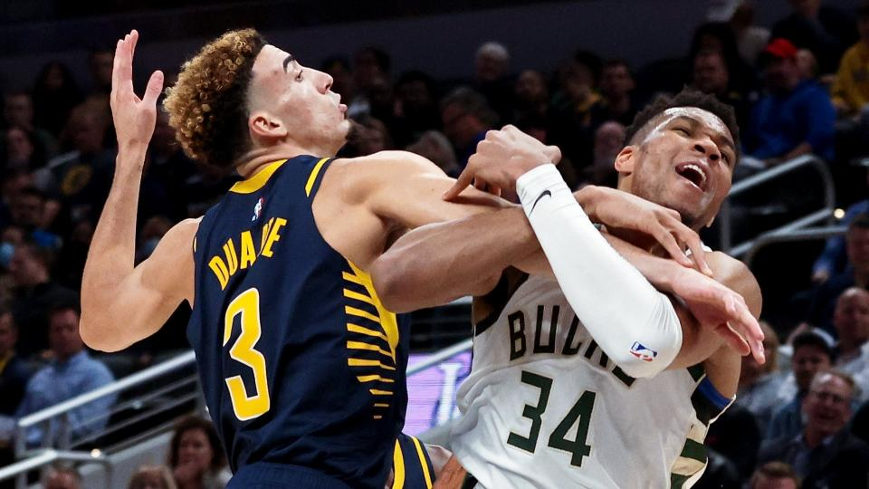
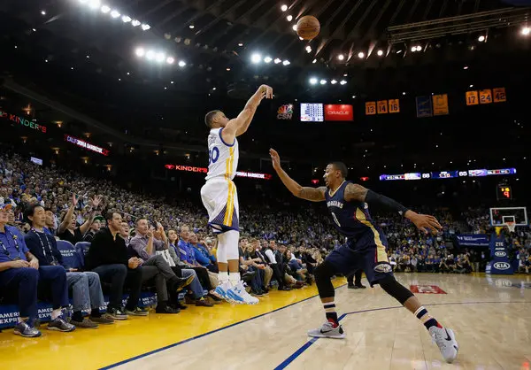

Basketball

Il basket, uno degli sport più popolari al mondo, è caratterizzato da regole precise che danno vita a partite avvincenti e emozionanti. Con una lunga storia e un grande seguito in Italia, è importante conoscere le regole fondamentali di questo sport per poter apprezzare appieno le sfide che si svolgono sul campo.
Le partite di basket si compongono di quattro quarti con una durata di 10 minuti per ogni quarto. Ogni squadra ha la possibilità di chiamare timeout per pianificare strategie o prendere una pausa. Vengono disputate tra due squadre, ognuna composta da cinque giocatori. L'obiettivo principale è segnare punti facendo entrare la palla nel canestro avversario e impedire all'altra squadra di segnare. Durante la partita, i giocatori possono muoversi sul campo palleggiando la palla, passandola tra di loro o tirando per segnare.
Tuttavia, ci sono alcune regole importanti da seguire. Ad esempio, il palleggio deve essere effettuato utilizzando una mano sola e il giocatore non può fermare il palleggio con entrambe le mani e poi riprendere il palleggio.
Il contatto fisico eccessivo è vietato nel basket. Non è consentito spingere, bloccare o ostacolare il movimento di un avversario in modo illegale. Questo include l'utilizzo di mani o gomiti per impedire il passaggio o il tiro dell'avversario.
Il punteggio viene determinato assegnando un certo numero di punti a ogni canestro. Il tiro da due punti viene assegnato quando la palla entra nel canestro all'interno dell'arco di tiro, mentre il tiro da tre punti viene assegnato quando la palla viene tirata e segnata da dietro la linea dei tre punti.
